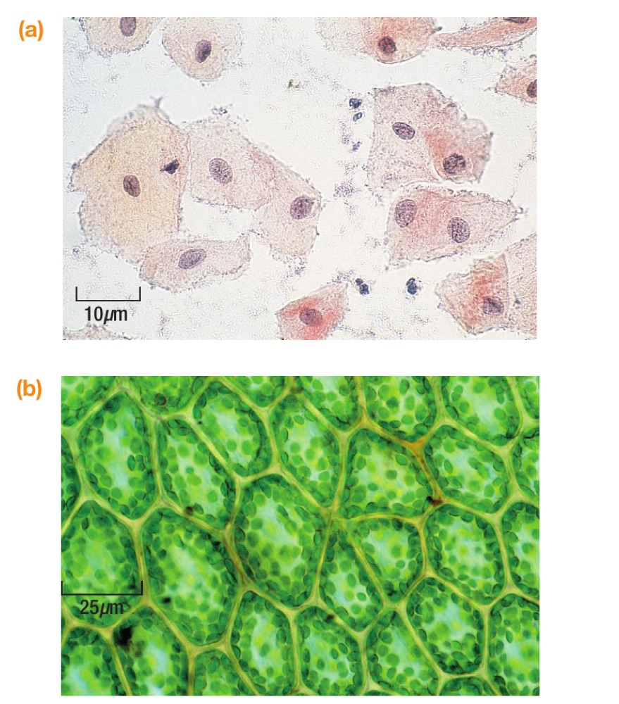

Year 11
BTEC Applied Science
Open the DNA and genetics project, or choose a unit below.
Class11/Bio/BTEC
DNA and genetics project
Digital project · 30–35 minutesCreate a growing kit schools can trust
Choose a breeding plan, check the genetics and create an honest product card. Type, save and download your work.
Open DNA and genetics project
Units

DNA and inheritance
DNA, genes and inheritance, then create a growing kit schools can trust.
2 lessons + project

Cells in the laboratory
Specialised cells, cell types and the cell-to-DNA museum brief.
2 lessons + project
Course induction
Evidence integrity, evidence trails and the Unit 1 cells baseline.
2 lessons